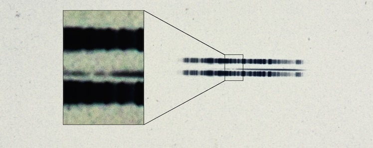

The beginning of the 20th century wasn’t just a wild time for theoretical physicists, but for astronomers as well. The development of spectroscopy (analysis of the spectra of not only astronomical objects) and the improvements in techniques for manufacturing telescope lenses resulted in a major shift in astronomical research. Today I’d like to focus on the life of one Dutch astronomer and a story of exoplanet detection all the way back in 1917.
Adriaan van Maanen, born in 1884, moved to the U.S. after completing his PhD in 1911, soon landing a job at the Mount Wilson Observatory in Pasadena. In 1917, he discovered a star, now called van Maanen 2, which turned out to be only the third white dwarf ever identified (we now know about tens of thousands of them). In addition, it is our closest solitary white dwarf, meaning it doesn’t have a companion in the form of a different star.
During this time, van Maanen also focused on measuring the rotation speeds of spiral nebulae. Spiral nebulae were a huge mystery for astronomers and became the center of a substantial dispute. This all culminated in an event, aptly nicknamed the Great Debate. It took place in 1920 in the U.S. National Museum, during a meeting of the National Academy of Sciences. Heber Curtis, who was at that time the director of Allegheny Observatory and ex-president of the Astronomical Society of the Pacific, argued that spiral nebulae were not collections of gas and dust in our Galaxy (what we usually think nebulae are), but that they’re actually far beyond it and are actually collections of stars, similar to the Milky Way (known as the “island universe” hypothesis). On the opposing side, Harlow Shapely, made famous by mapping the Milky Way, had an ace up his sleeve; van Maanen took photographs of these spirals and then using a blink comparator (device that “blinks” between two pictures) he calculated the proper motion of the nebulae. The figure he got was quite large, meaning that if they lay beyond our Galaxy, it would mean that the stars must be travelling at impossibly large velocities. The conclusion Shapley drew was that the spiral nebulae must lie in the Milky Way. But it’s entirely possible that Shapley had an ulterior motive all along - historian of astronomy Michael Hoskin noted in his 1976 paper, that Shapley’s presence at the debate might have been motivated by the possibility of getting the seat of the director of the Harvard College Observatory. But worry not - he earned the position a year later and held it until 1952.
It was none other than Edwin Hubble, whom you may know for the Hubble constant and the telescope that was named after him, finally settled the debate and proved Shapley wrong. Curtis was, in fact, correct about the “island universes”, which we now know are distant galaxies. Furthermore, no one really knows where van Maanen made a mistake with his measurements. Now, returning to the white dwarf van Maanen 2? In 2014, while preparing for a talk at a symposium, Ben Zuckerman realized that there was evidence suggesting the presence of an exoplanet orbiting van Maanen 2. When analysing the spectral lines (a fingerprint of the light that an object emits and absorbs) Zuckerman noticed that they showed that there is iron on the surface of the white dwarf. This made no sense to him, because one would expect that all the iron had fallen into the core of the stellar remnant, and thus should not be detectable using spectroscopy. A plausible explanation is that there’s a belt of asteroids around van Maanen 2 and thanks to the gravitational dynamics with a planet, these asteroids fall into the white dwarf. Zuckerman’s colleague, Jay Farihi, who suggested he review field of heavy element ”pollution” of the photosphere (or surface) of white dwarfs, then reviewed van Maanen’s original measurements, summarising all the evidence in favour of this possibly first ever exoplanet sighting more than 100 years ago!

Sources:
Recognition of the First Observational Evidence of an Extrasolar Planetary System. arXiv [online]. 2014 [cit. 2025-07-13]. Available at:
https://doi.org/10.48550/arXiv.1410.2575
Farihi, J. Circumstellar debris and pollution at white dwarf stars. New Astronomy Reviews [online]. 2016 [cit. 2025-07-13]. DOI: 10.1016/j.newar.2016.03.001. Available at:
https://www.sciencedirect.com/science/article/pii/S1387647315300075
1917 Astronomical Plate Has First Ever Evidence of Exoplanetary System. Carnegie Science [online]. 2014 [cit. 2025-07-13]. Available at:
https://carnegiescience.edu/news/1917-astronomical-plate-has-first-ever-evidence-exoplanetary-system
van Maanen, A. A faint star of large proper motion. The Astrophysical Journal [online]. 1917 [cit. 2025-07-13]. DOI: 10.1086/122654. Available at:
https://iopscience.iop.org/article/10.1086/122654
Adriaan van Maanen. Linda Hall Library: Scientist of the Day [online]. 2019 [cit. 2025-07-13]. Available at:
https://www.lindahall.org/about/news/scientist-of-the-day/adriaan-van-maanen/